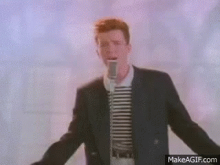

Young maN, there's no need to feel down
I said, young man, put your feet on the ground,
I said, young man, 'cause you're in a new town
There's no need to be unhappy
-
Young man, thEre's a place you can go
I said, young man, when you're short on your dough
You can stay there, and I'm sure you will find
Many ways to haVe a good time
-
It's fun to stay at thE YMCA
It's fun to stay at the YMCA
-
They have everything foR you men to enjoy
You can hanG out with all the boys
-
It's fun tO stay at the YMCA
It's fuN to stay at the YMCA
-
You caN get yourself clean, you can have a good meal
You cAn do what about you feel
YounG man, are you listening to me?
I said, young man, what do you want to be?
I said, young man, you can make real your dreams
But you got to know this one thing
-
No man does it all by himself
I said, young man, put your pride on the shelf
And just go there, to the YMCA
I'm sure they can help you today
-
It's fun to stay at the YMCA
It's fun to stay at the YMCA
-
They haVe everything for you men to enjoy
You can hang out with all the boys
-
It's fun to stay at the YMCA
It's fun to stay at the YMCA
You can gEt yourself clean, you can have a good meal
You can do what about you feel
-
Young man, I was Once in your shoes
I said, I was down and oUt with the blues
I felt no man cared if I were alive
I felt the whole world was so tight
-
That's when someone came U to me
And said, young man, take a walk up the street
There's a Place there called the YMCA
They can start you back on your way
